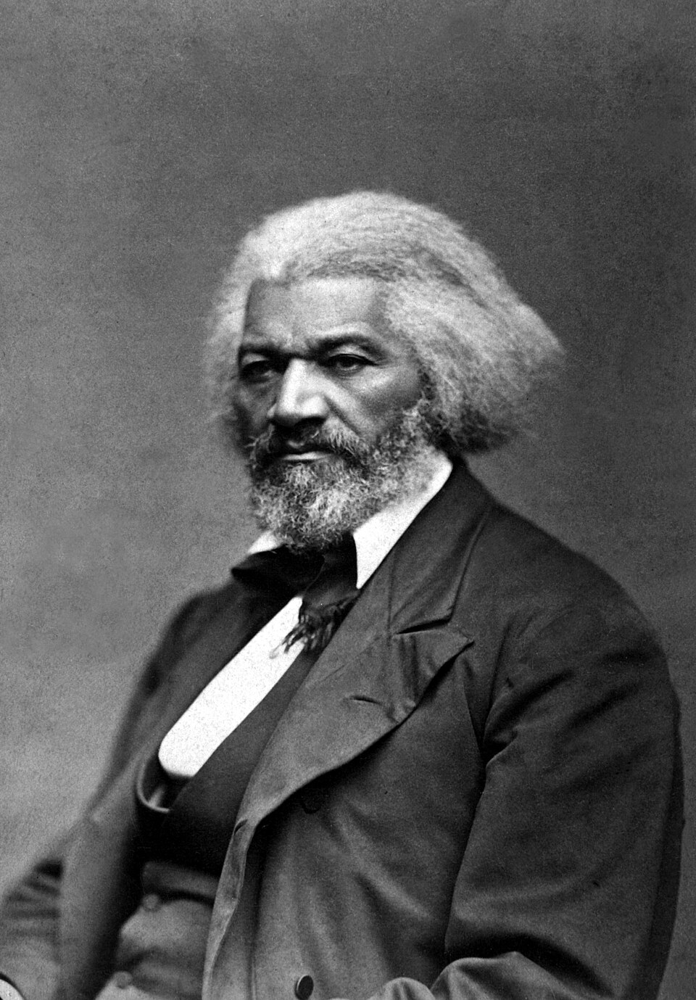
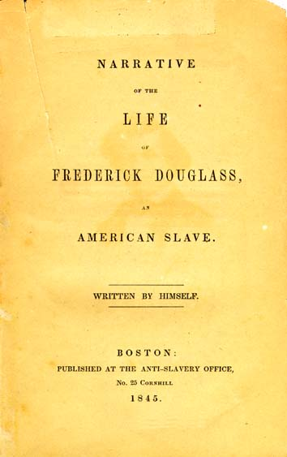
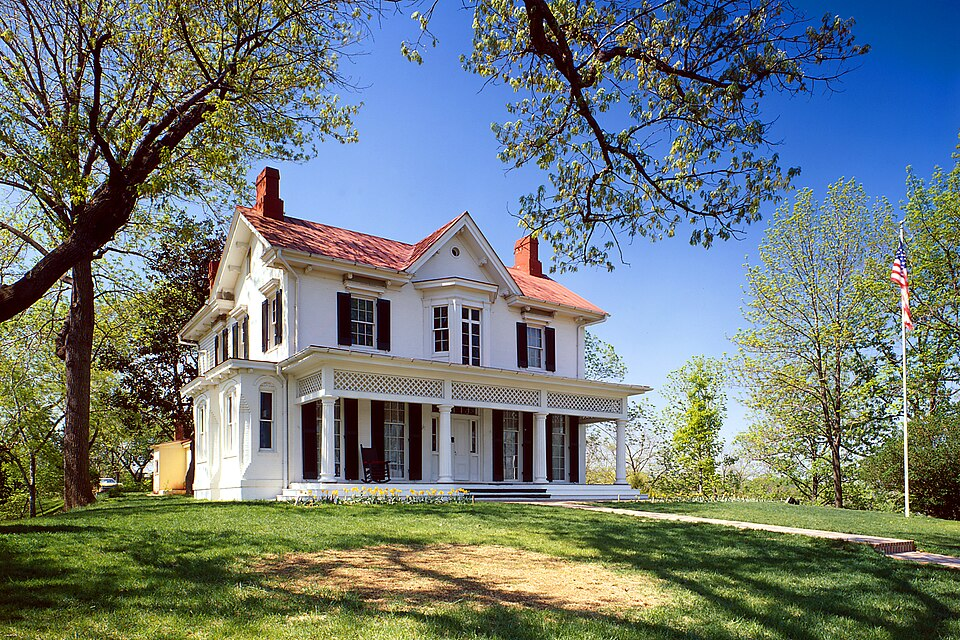

⏱️ 10초 카드 · 노예제 폐지·남북전쟁 (1818?~1895)
탈출한 노예자서전7월 4일 연설글=자유의 무기
여는 질문 — 네가 가진 것 중에 무기가 될 수 있는 건 무엇일까?
이름
한국어프레더릭 더글러스
원어Frederick Douglass
실제 발음프레더릭 더글러스
로마자Frederick Douglass
영어권Frederick Douglass
왜 이 사람인가
해방이 '주어진 선물'이 아니라 흑인들이 싸워 얻은 것임을 보여 주는 얼굴이에요. 노예로 태어나 글을 훔쳐 배우고, 그 글로 한 시대의 양심을 흔들었죠. 링컨 옆에 이 사람을 둬야 노예해방의 절반이 보여요.
생애
메릴랜드의 농장에서 노예로 태어났어요. 글을 배우는 것이 금지된 신분이었지만 동네 아이들에게 빵을 주고 글자를 배웠죠 — '글이 자유로 가는 길'임을 직감했다고 훗날 썼어요. 스무 살에 탈출해 자유주로 갔습니다.
그의 연설과 자서전(1845)은 '노예도 백인과 같은 인간임을 증명하는 살아 있는 증거'가 됐어요. "여러분의 7월 4일은 노예에게 무엇입니까"라는 연설로 독립선언의 위선을 정면으로 찔렀고, 신문을 발행하며 여성 참정권 운동까지 지지했죠.
남북전쟁 때는 링컨을 직접 만나 흑인 병사 모집과 동등한 처우를 압박했고, 두 아들을 입대시켰어요. 해방이 '주어진 선물'이 아니라 흑인 자신들이 싸워 얻은 것임을 보여 주는 대표 인물 — 노예해방 후에도 평생 평등을 위해 싸웠습니다.
자료로 보기 — 유묵·사진



남긴 말
“권력은 요구 없이는 아무것도 양보하지 않는다. 지금까지도, 앞으로도 그렇다.”
권리는 저절로 주어지지 않는다는, 그의 평생을 요약하는 말이에요. · 출처: 프레더릭 더글러스, 연설(1857)
“당신들의 7월 4일은 노예에게 무엇입니까?”
미국 독립기념일에 한 연설이에요. '모든 인간은 평등하다'는 독립선언과 노예제의 모순을 정면으로 찔렀죠. · 출처: 더글러스, 'What to the Slave Is the Fourth of July?'(1852)
연표
- 1818?메릴랜드에서 노예로 출생
- 1838탈출 — 자유의 몸으로
- 1845자서전 출간 — 국제적 명사로
- 1852'노예에게 7월 4일이란' 연설
- 1863~링컨 면담 · 흑인 병사 모집 운동
- 1895사망 — 마지막 날까지 연설
노예에서 시대의 목소리로
농장에서 도시로, 그리고 자유주와 백악관까지 — '글'을 무기로 신분의 사슬을 끊어 낸 길이에요.
현재 지도 위 표시예요. 남쪽 농장에서 북쪽 자유주로 향한 이 길이, 수많은 노예가 목숨을 걸고 오른 '자유로 가는 길'이었어요.
빛과 그림자그의 삶 자체가 '노예는 열등하다'는 시대의 거짓말에 대한 반증이었어요. 그림자라기보다 질문 — 그가 죽고 한 세기가 지나도록 그의 싸움(투표권·평등)이 끝나지 않았다는 것, 그게 미국사의 그림자죠.
더 깊이 (고등·일반)
글을 훔쳐 배우다
메릴랜드 농장에서 노예로 태어났어요. 노예가 글을 배우는 건 금지였지만, 그는 동네 아이들에게 빵을 주고 글자를 배웠죠. '글이 자유로 가는 길'임을 직감했다고 훗날 썼어요.
탈출, 그리고 자서전(1845)
스무 살에 탈출해 자유주로 갔어요. 그의 연설과 자서전은 '노예도 백인과 똑같은 인간'임을 증명하는 살아 있는 증거가 됐죠. 너무 잘 쓴 글이라 '진짜 노예였냐'는 의심까지 받았을 정도예요.
'7월 4일' 연설(1852)
독립기념일 연설에서 그는 독립선언의 위선을 정면으로 찔렀어요 — 자유를 노래하는 나라가 수백만을 노예로 묶어 두고 있다고. 미국 역사상 가장 강력한 연설 중 하나로 꼽혀요.
신문과 더 넓은 평등
그는 직접 신문을 발행했고, 흑인 해방뿐 아니라 여성 참정권 운동까지 지지했어요. '평등은 나눌 수 없다'는 걸 일찍 알았던 거죠.
해방은 '쟁취'한 것
남북전쟁 때 그는 링컨을 직접 만나 흑인 병사 모집과 동등한 처우를 압박했고, 두 아들을 입대시켰어요. 해방은 주어진 선물이 아니라 흑인들이 싸워 얻은 것 — 그가 그 산 증거예요.
이 인물이 나오는 이야기
더 공부하기 — 여기서 출발하세요
📚 책으로
- 미국 노예, 프레더릭 더글러스의 삶 (자서전) ↗ · 프레더릭 더글러스글을 훔쳐 배운 노예가 직접 쓴 생애 — 그의 결정판.
- 노예에서 자유인으로 ↗노예제와 폐지 운동의 큰 흐름.
📜 1차 사료
- '노예에게 7월 4일이란?' 연설(1852) ↗독립선언의 위선을 찌른 연설 원문.
- 자서전 원문 (Narrative, 1845) ↗누구나 읽을 수 있는 공개 전자책.
🎬 영상으로
- 다큐 — Becoming Frederick Douglass ↗ · PBS America노예에서 시대의 목소리로 — PBS 다큐멘터리(영어).
📍 가 볼 곳
- 탤벗 카운티 (메릴랜드)노예로 태어난 농장이 있던 곳.
- 로체스터 (뉴욕주)신문을 발행하며 운동의 거점으로 삼은 도시.
- 시더 힐 / 더글러스 국가사적지 (워싱턴 DC)말년을 보낸 집, 지금은 기념관.